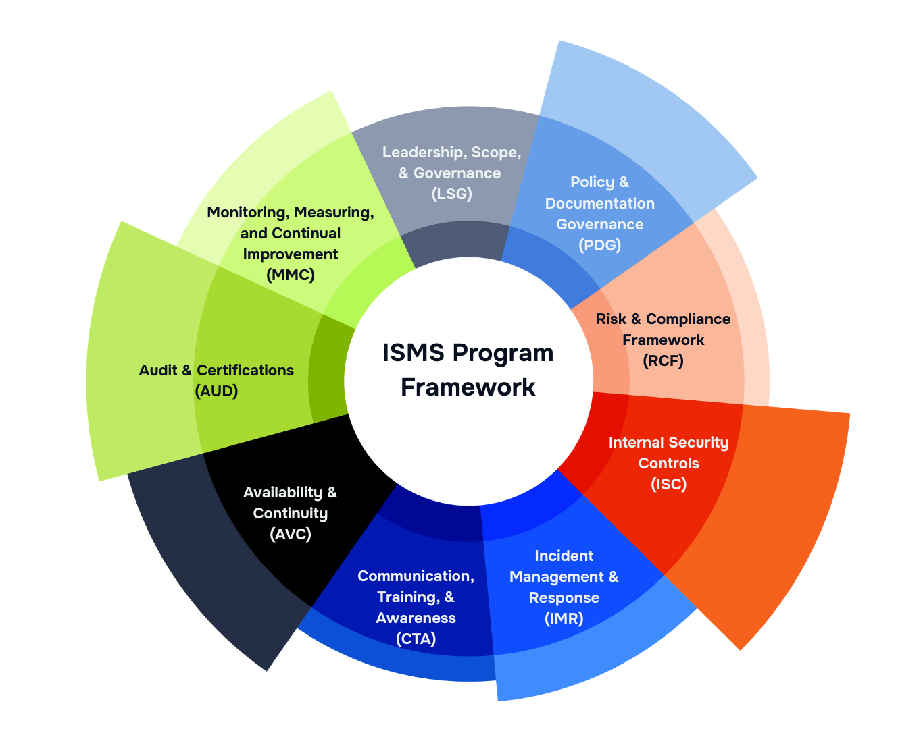

STRUCTURE, STRENGTHEN, STREAMLINE, SCALE
Cybersecurity Services
Most organizations know they need stronger security. Few know where to start. We structure what's missing, strengthen what exists, and make sure compliance doesn't slow you down.
Structure, Strengthen, Streamline, Scale
GrowthPoint can help you build and scale your cybersecurity program using our decades of experience. Partner with a company that will take the time to understand your organization and challenges, and come up with solutions that are affordable and realistic for where you are on your journey.
GrowthPoint provides fractional CISO services to lead and build cybersecurity programs for organizations that want experienced leaders without having to pay FTE salaries and benefits. We can help structure brand new programs, strengthen existing programs by focusing limited time and budget on the right areas, and finally we can help streamline and scale for growth.
GrowthPoint provides a full range of cybersecurity and regulatory compliance project-based services to clients from startups to small enterprises. The scope of services covers all areas of a comprehensive security program, but tailored to the current size and maturity of your organization. This includes strategic planning and leadership, policy and standard governance, internal security controls, incident management, risk management, third party risk assessments, tabletop assessments, business continuity, internal and external audits and certifications, training, and awareness, and more.
ISMS Program
GrowthPoint takes a strategic view toward cybersecurity, governance, risk and compliance that is framework-agnostic. We can work with the major frameworks such as SOC 2, ISO 27001, NIST CSF 2.0, and CIS Controls and help you determine which frameworks work best where you are on your cybersecurity journey. The interactive graphic below shows the high-level components of a mature Information Security Management System (ISMS) program. Click on each title in the graphic to see more details.

Risk-based Tailored Approach
There is no one-size-fits-all that works with cybersecurity and our services are tailored to your size and needs. We provide advice and consultation for startups to get them off on the right path, or we can provide full fractional CISO services to build and grow your entire cybersecurity and GRC program. We will use a risk assessment, whether informal or formal, to prioritize and guide where to best to invest for company and industry and ensure you are structuring correctly to build a strong durable cybersecurity program.


Audits & Certifications
Is your company trying to comply with one of the major cybersecurity standards such as SOC 2 Type II or ISO 27001 and need help preparing? We can help ensure that you are set up with the proper internal controls and programs and assist you through the entire process.

The Case for Fractional CISO
Why use a fractional CISO? There are many reasons to use a fractional CISO. If you need to secure your environment and ensure regulatory compliance but can't afford the cost of a full-time CISO then a fractional may work for you.

Real CISO with Real Experience
We have served in real CISO roles in startups and small enterprises and have experience in both building and scaling cybersecurity programs as well as working with leadership to align with business objectives. We are CISSP certified by ISC2, CHPS certified by AHIMA and participate in many groups and professional organizations to stay updated on the latest in cybersecurity. We develop strong relationships with our customers and our goal is to make you successful.

Regulatory and Data Privacy Compliance
Navigating the ever-evolving landscape of data privacy and regulatory compliance can be complex, time-consuming, and high risk—especially for growing organizations handling sensitive information. At GrowthPoint, we help businesses confidently meet their obligations under a wide range of U.S. and international regulations, including GLBA, GDPR, CPRA, HIPAA, and state-specific AI and data privacy laws. Whether you’re preparing for your first regulatory audit, responding to new data subject access requests, or reassessing your internal controls to accommodate business changes, we deliver strategic guidance and practical implementation support.
Leadership Experience
Gain senior-level experts who provide strategic leadership, guidance, and strategy to help your company grow and scale.